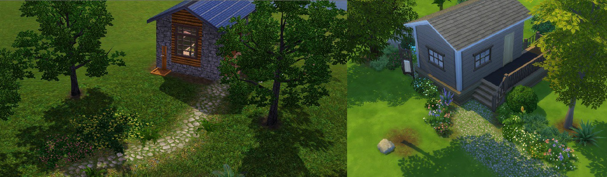
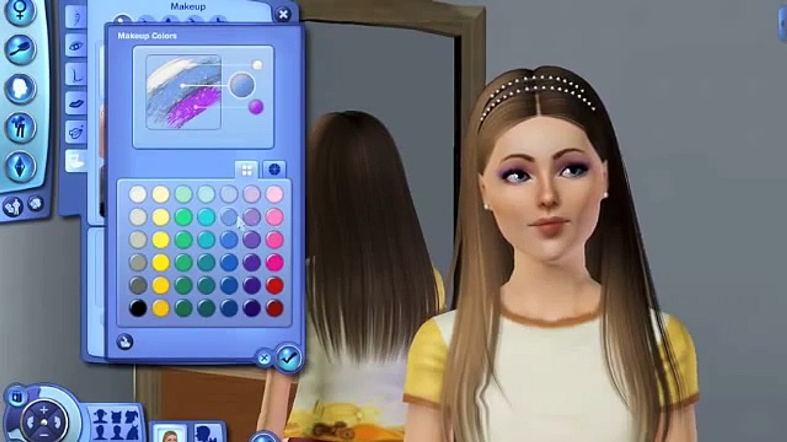
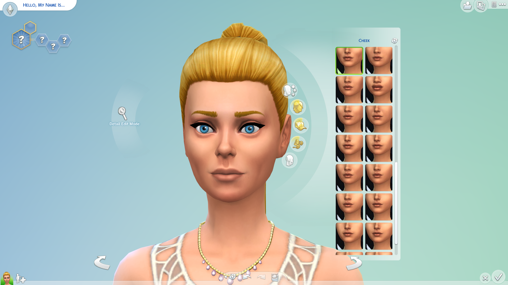
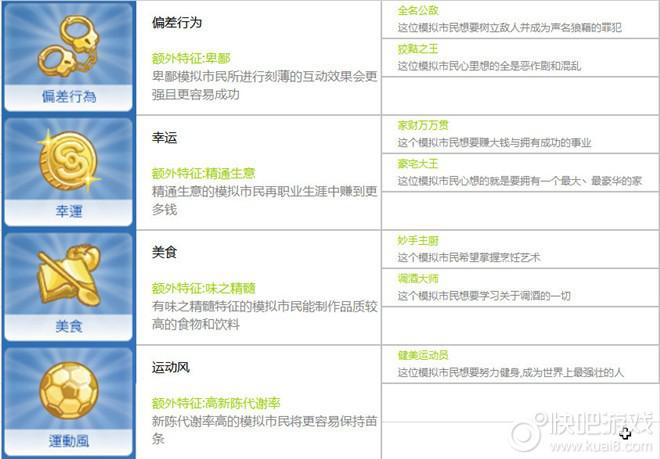
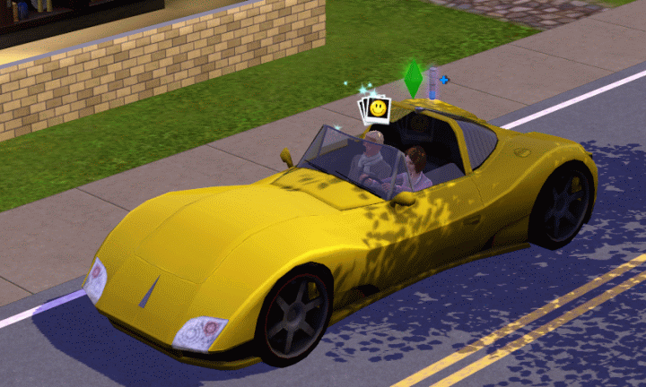
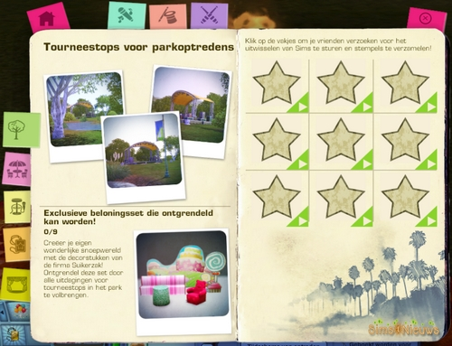

◆介面


模擬市民3的介面功能齊全，功能較多。
模擬市民4的介面較簡潔，不影響遊戲視野。
◆畫面
模擬市民3的細節較真實，將畫面放大還是能看得清楚物品細節。
模擬市民4偏卡通風格，在整體的畫面雖然清楚，但放大之後就能看出細節比較不精細。
◆流暢度
模擬市民3因為元素多樣，因此遊戲的加載時間會比較慢。
模擬市民4因為少了許多功能，遊戲速度相對流暢。
◆創建模擬市民
 模擬市民3設定身材的功能雖然沒有模擬市民4彈性，但是身體細節較為真實。
服裝選擇雖然有限，但是可以利用調色盤功能調出自己喜歡的顏色。
模擬市民4自由度較模擬市民3高，服裝選擇多樣，且能修改臉部細節。
◆特徵
模擬市民3可在創建模擬市民時，選擇5個特徵。並用獎勵點數換取更多特徵。
模擬市民4除了原先選擇的三個特徵外，還會有一個額外特徵。額外特徵不會於轉換抱負後被消除。
◆終生期望&抱負
在模擬市民3，一輩子只能完成一個終生期望。不過可完成其他任務獲得期望點數。
模擬市民4的抱負則沒有限制，種類多且可以隨時切換。
◆探索社區&世界
模擬市民3利用無縫社區的功能，在社區裡移動的時候，利用不同交通工具取代讀取畫面，讓玩家在探索社區時具有臨場感。
模擬市民4雖然無法自由探索社區，但是在不同資料片的場景轉換比較快速。
◆額外內容
在模擬市民3，額外的物品(衣服、場景)可以在官網上購買，或是以Simpoints在The Sims 3 Store購買。但是不便宜
而模擬市民4將額外內容分成資料片、擴充包、組合包三種，在origin平台就能購買。一樣不便宜
◆SimPort(Sims 3獨有功能)
SimPort是《模擬人生 3》中的一項功能。此功能允許玩家派遣他們的歌手、雜技演員或魔術師在朋友的世界巡迴演出。
玩家還可以在自己的遊戲中為朋友的模擬市民舉辦巡迴演出。
家裡至少有 2 個模擬市民才能派模擬市民參加巡演，而且您的表演模擬市民必須達到參加他們表演場地的適當水平(職業2級以上)。